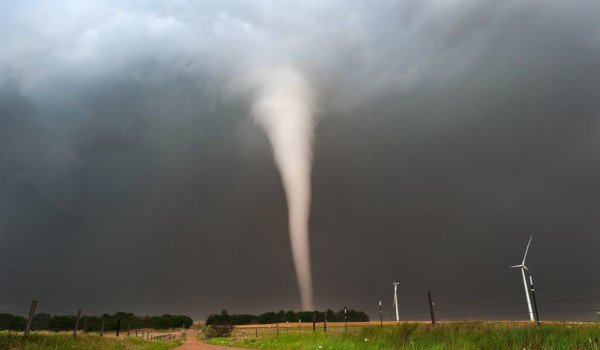
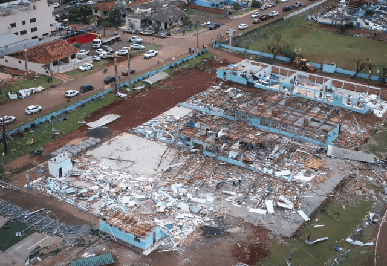
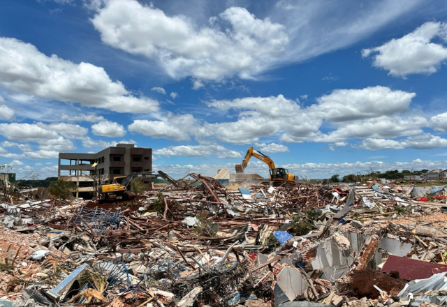

O que são tornados?
Tornados são fenômenos naturais caracterizados por uma coluna de ar em rotação intensa que se estende de uma nuvem de tempestade até o solo. Eles podem apresentar ventos extremamente fortes, capazes de destruir construções, derrubar árvores e lançar objetos a grandes distâncias.

Como se formam?
Os tornados geralmente se formam durante tempestades intensas, quando massas de ar com diferentes temperaturas, umidades e velocidades se encontram. Em determinadas condições, essa diferença de ventos pode gerar um movimento de rotação no ar. Quando essa rotação se intensifica e forma um funil que alcança o solo, temos um tornado.
Onde ocorrem?
Os tornados podem ocorrer em diversas partes do mundo, sendo mais frequentes nos Estados Unidos. No Brasil, acontecem principalmente nas regiões Sul e Sudeste, com registros em estados como Paraná, Santa Catarina e Rio Grande do Sul. Apesar de serem relativamente raros, também podem ocorrer em outras regiões do país.
Quais os perigos?
Os tornados representam um grande perigo devido à força de seus ventos, que podem destruir casas, danificar edifícios, derrubar postes e arrancar árvores. Além dos danos materiais, eles podem provocar ferimentos e mortes, especialmente quando atingem áreas habitadas. A queda de destroços e a interrupção do fornecimento de energia também podem colocar a população em risco.


Como se proteger?
Ao receber um alerta de tornado, procure abrigo imediatamente em um porão ou em um cômodo pequeno no andar mais baixo de uma construção, longe de janelas. Proteja a cabeça e o pescoço com os braços, um colchão ou um capacete, se disponível. Evite permanecer em veículos, casas móveis ou áreas abertas. Siga os alertas e instruções da Defesa Civil e de autoridades locais para aumentar sua segurança.